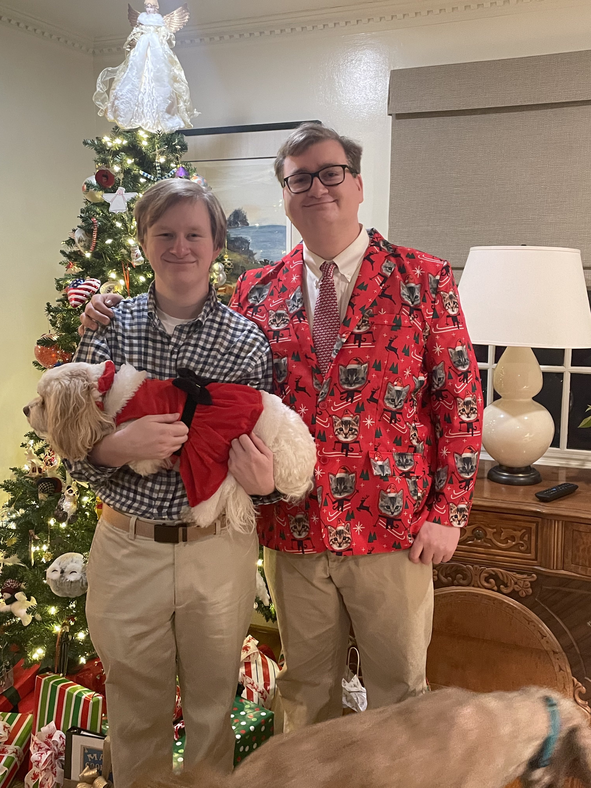
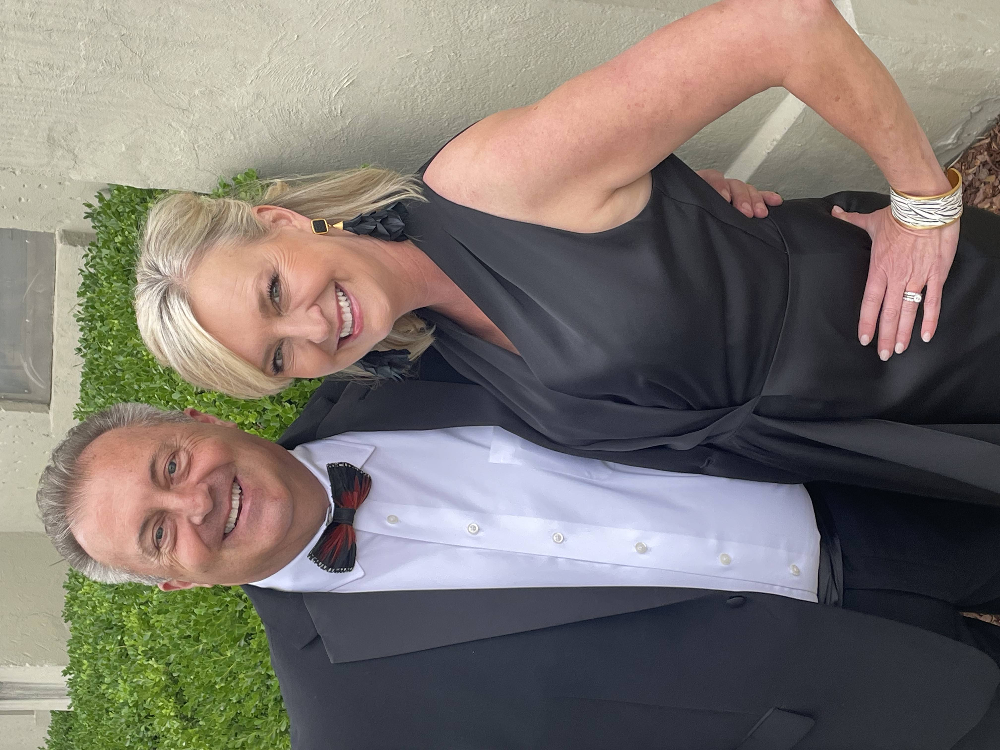
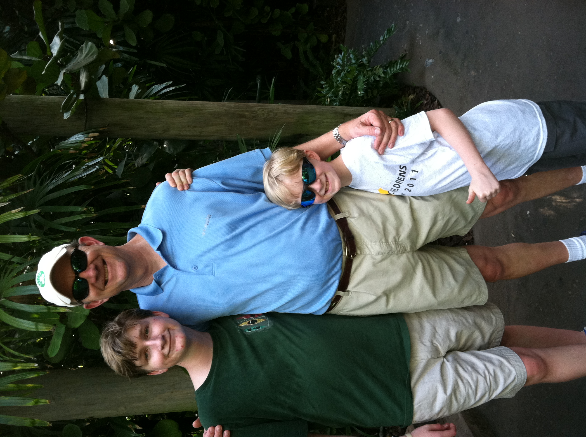

What can you expect out of his personality?
William has several traits that make him stand out as an individual, Including:
Here's a quick look at some of Will's family:
Will's Brother, Daniel
Will's Mom, Joanna
Will's Father, Dan
Some Goals of Mine Include:
I'd like to become a better programmer, there will always be room to grow.
I'd like to get married at some point, I'm too young right now, but it would be nice to connect with someone.
I'd like to travel to each U.S state at least once. Even if I'm an introvert, the world is meant to be seen!
I'd like to be able to work hard towards a cushionable lifestyle. Stability is the key to happiness!